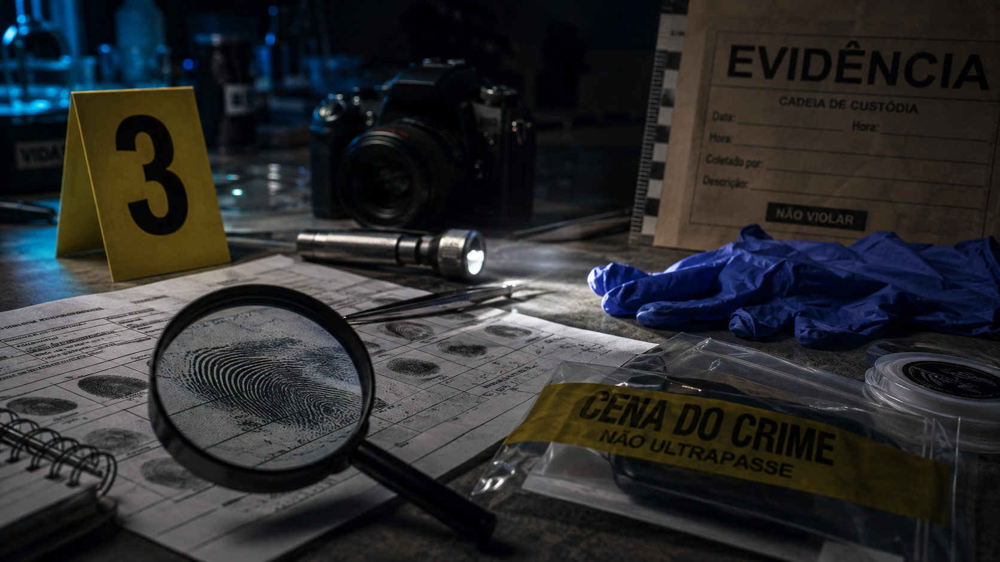

A ciência por trás de um crime
Por: Amanda Mayumi
Uma investigação criminal é formada por diversas etapas e envolve profissionais de diferentes áreas. A perícia criminal tem um papel fundamental nesse processo, analisando vestígios encontrados e utilizando conhecimentos científicos para ajudar a esclarecer os fatos.